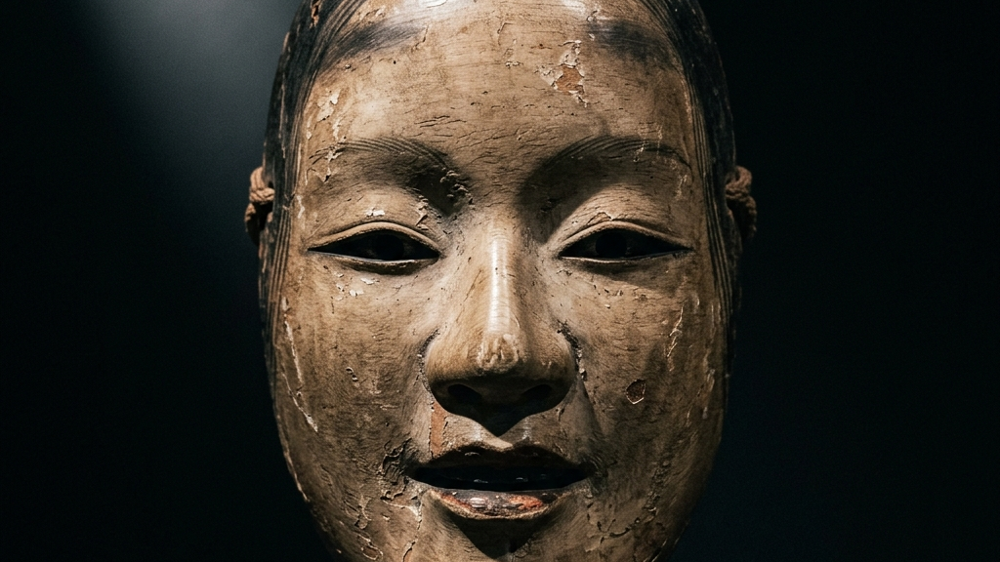
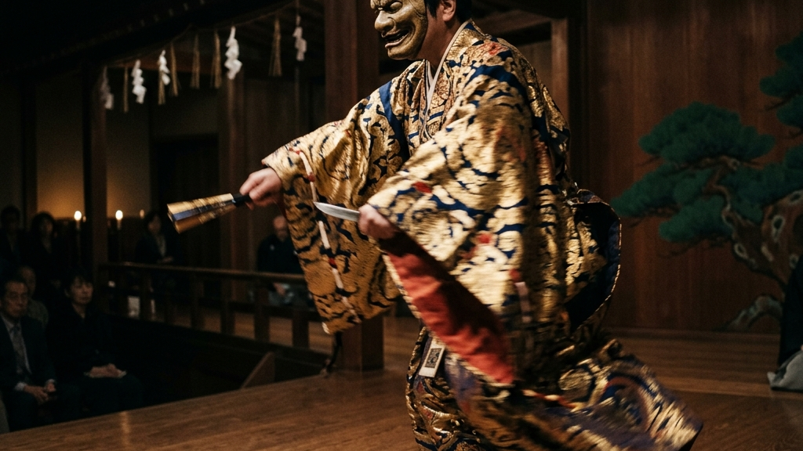
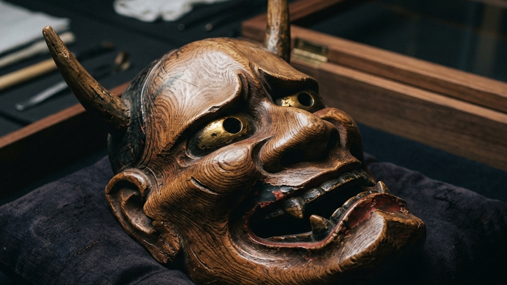
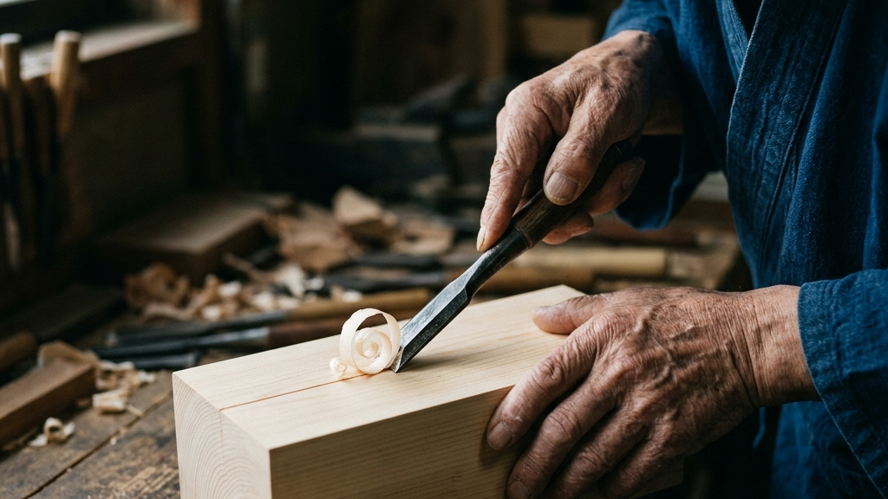
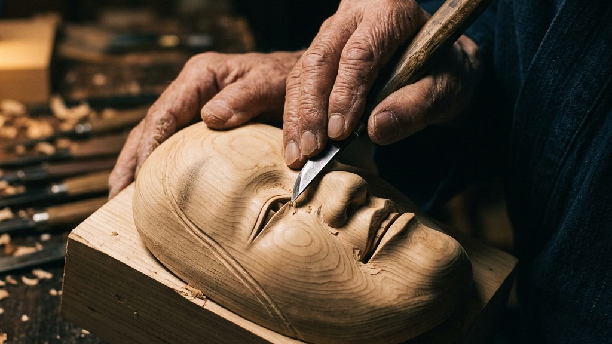
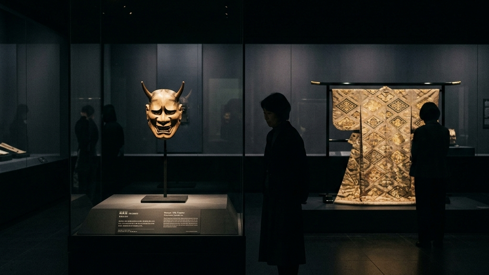
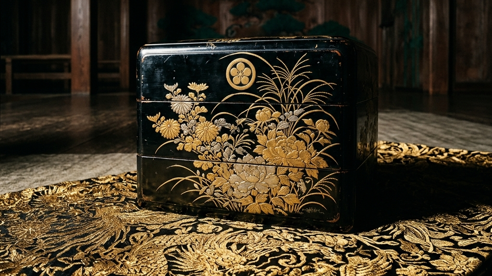

静寂が支配するガラスケースの向こう側で、長い眠りについていた美術品が本来の生動を取り戻す瞬間があります。博物館に死蔵されていた重要文化財を舞台という生きた循環へと還流させる試みは、私たちに伝統のあり方を静かに問いかけます。
【本稿で紐解く3つの核心】
暗闇のなかで、檜の木肌に彫り込まれた感情が、かすかな光の揺らぎによって無数の表情へと氷解していく。重要文化財として保護される能面は、決して歴史の遺物ではなく、現代を生きる私たちの精神を撃ち抜く強烈な生命体を宿しています。本稿では、今週末に地上波で放映される特集を起点に、文化財の蘇生と手仕事の深淵に迫ります。

東京国立博物館の展示室で、何世代もの来館者の視線を受け止めてきた重要文化財の数々。加賀前田家ゆかりの貴重な能面や装束が、本来の役割である「芸能の道具」として能舞台の上で躍動する特別な公演「東博能2026」の舞台裏が、今週末のNHK Eテレ「芸能きわみ堂」で密着放映されます。これは、美術品として静止していた文化財に血肉を通わせる、極めて野心的な臨床の試みです。通常、こうした重要文化財は年間の公開日数が厳しく制限され、温度は20度前後、湿度は50％から55％の極めて狭い許容値内に保たれた暗室で保管されます。そこでは、物質の「経年変化」を力ずくで停止させるための科学的防腐処置が施されているのです。
能面は、博物館のガラスケースに収められている限り、完璧に保護された美しい「死体」にすぎません。湿度が厳重に管理された空気のなかで、それはただ劣化を防ぐためだけに静止しています。しかし、ひとたび宝生流宗家をはじめとする能楽師の顔へと密着し、舞台の熱気と演者の呼吸を吸い込んだとき、その木肌は生き生きとした光沢を取り戻し、観客の魂を揺さぶる強烈な表現の道具へと変貌を遂げます。もちろん、この生動の還流には重大な物理的リスクが伴います。演者の顔から発せられる微細な汗や皮脂、呼気による急激な湿度変化は、数百年を経た漆や胡粉の彩色層を浮かせ、剥落させる致命的なトリガーになりかねません。だからこそ、舞台裏では極限の緊張感のもと、修復技術者が一瞬の隙もなく文化財のコンディションを監視し続けているのです。
この還流の試みは、伝統を単なる保存の対象から、現在進行形の生命活動へと蘇生させる道標となります。かつて戦国乱世を駆け抜け、加賀百万石の栄華を支えた前田利家やまつが愛した美意識が、今もなお体温を伴って現代の舞台で脈動しているという事実は、歴史の連続性を私たちの皮膚感覚に直接訴えかけてくるのです。特に、前田家伝来の能面「翁（おきな）」や「小面（こおもて）」がまとう空気感は、単なるアンティークのそれとは一線を画します。それは、数百年にわたり「神聖な祈りの道具」として実際に使用され、無数の舞台の摩擦と演者の精神統一の瞬間をその木肌に記憶として刻み込んできたからに他なりません。
今回の東博能2026では、特別に設営された檜の能舞台において、本物の重要文化財を身にまとった演者が、蝋燭の揺らぐ炎と最新の光学設計によるLED照明が交差する独自の光環境の中で舞を披露します。この演出は、均一で平坦な蛍光灯の下では決して見ることのできない、能面が本来持っている「影の深度」を極限まで引き出すための物理的なアプローチです。光の角度が一度変わるだけで、能面の眉間に彫られた微細な陰翳が動き、まるで木肌そのものが呼吸を始めたかのような錯覚を観客に与えます。それは、静止した空間である博物館のガラスケースという境界線を取り払い、観客と文化財を同一の空間的振動の中で接続する、極めて豊饒な知覚の体験なのです。
観阿弥・世阿弥による猿楽の確立とともに、神仏と交信する神聖な依代としての能面が誕生し、各地の神社仏閣に奉納される。
幕府の式楽となり、特に加賀藩前田家などの有力大名が手厚いパトロンシップを発揮。重要文化財となる極上の能面が数多く作られ、蔵に守られる。
2026年、東京国立博物館の舞台において、収蔵された重要文化財の能面を実際に着用する「東博能」が開催。静的な保護から動的な循環への歴史的パラダイムシフトが起こる。
私たちが歴史を見上げるとき、それはしばしば印刷された教科書や、分厚いコンクリート壁の展示室に閉じ込められた距離感として現れます。しかし、能舞台という神聖な空間において、重要文化財が演者の呼吸と一体になり、床板を踏み締める振動が響き渡るとき、その距離感は一瞬にして消滅します。かつて数百年前の職人が檜の塊に向き合い、その刃先から削り出した一筋の削り跡が、現代のLED照明と蝋燭の光に照らされて全く新しい陰影を立ち上げる。その光景は、過去と現代が最も純粋な形で交錯する特異点と言えるでしょう。

現代の文化財保護は、ともすれば「触れてはならないもの」として対象を徹底的に隔離し、劣化の速度をゼロに近づける静的な防腐処置に陥りがちです。もちろん、歴史的資産を後世へ遺すために物理的な保存は極めて重要です。しかし、本来「道具」として作られたものが、一度もその役割を果たさずにただ無菌の暗室で眠り続けることは、その工芸品にとって精神的な死を意味するのではないかという問いが生じます。どれほど美しい工芸品であっても、それが人間の手による摩擦や呼吸を奪われ、歴史という名の無響室に置かれるとき、その本質的な美はゆっくりと窒息していきます。
文化庁が推進する非観光型・小規模文化財の活用モデル 文化庁コーチング事例と辰巳清教授の視点が示すように、文化財は地域やコミュニティの生きた営みと接続されて初めて、その真価を発揮します。単に延命させるだけではなく、国立文化財修理センター京都設立から紐解く伝統工芸の臨床と蘇生が物語るように、文化遺産を現代の臨床の場へ循環させる知恵こそが、伝統を未来へと遺すための真の防波堤となるのです。ただ壊れないように箱に入れておく「消費的保護」から、舞台の摩擦のなかでその価値を再構築する「動的保存」への移行。これこそが、伝統が現代に生き残るための唯一の選択肢なのです。
能面を舞台へ還流させることは、当然ながら摩耗や皮脂による汚損といった深刻なリスクを伴います。木材の呼吸を止めてしまうポリウレタンなどの化学塗料とは異なり、天然の漆や膠、胡粉で彩色された能面は極めて繊細です。演者が流す汗の塩分や、声を出す際の唾液の微粒子は、漆の劣化を促進させ、彩色の浮き上がりを招きます。しかし、その微細な摩擦と傷こそが、道具に魂を宿らせる不可欠なプロセスです。傷つくことを恐れてガラスの檻に閉じ込めるだけの優しさは、その伝統の精神を硬直させ、いずれ人々から忘れ去られる無関心の闇へと葬り去ることになりかねません。あえて傷を背負う覚悟を持って舞台へ出すこと。そこにこそ、文化を1,000年先へ遺すための泥臭い情熱が存在します。
この「リスクを背負った還流」を可能にするのは、高度な修復技術と、文化財を守り伝える人々の気高き覚悟です。舞台から戻った能面は、直ちに修復技術者の手によって、付着した皮脂や汗を微細な繊維で優しく拭き取られ、温度と湿度が極限まで調整された木箱へと戻されます。この「臨床」と「休息」の動的なサイクルこそが、能面の木肌に深みを与え、数百年の歳月を越えてなお、見る者を射すような圧倒的な艶を生み出します。管理の安心を手放し、不確実な舞台の摩擦へと飛び込むことでしか到達できない表現の頂が、そこには確かに存在しています。私たちは、伝統を安全な場所で保護することと、リスクを背負って生き長らえさせることの二律背反を、常に自覚しなければならないのです。
「傷つかない無菌の檻で眠り続けることは、伝統の保護ではない。
— 伝統の動的循環における臨床の思想
道具としての摩擦を受け入れ、呼吸を宿らせて初めて、工芸の命は蘇る。」
演者が能面をまとうとき、その視界は鼻の穴に開けられた僅か数ミリの小さな針穴だけに制限されます。ほとんど盲目に近い状態で、演者は己の身体感覚だけを頼りに床板の感触を探り、空間と対話します。この逃げ場のない極限のプレッシャーのなかで、重要文化財という重みが演者の背筋を研ぎ澄ませ、奇跡的な舞を生み出すのです。管理の安心を手放し、不確実な舞台の摩擦へと飛び込むことでしか到達できない表現の頂が、そこには確かに存在しています。
その暗闇のなかで、演者は己の内なる声と向き合い、数百年前にその面を打った職人の気配を皮膚感覚で受信します。この針穴の向こうに広がる無限の時空こそが、能という芸能が紡ぐ最大の神秘なのです。

能面を打つという行為は、極限まで乾燥させた檜の無垢な木地と対峙し、職人が自らの意志を一本の彫刻刀に込めて削り出していく、一切のやり直しが利かない極めて理不尽で不確実な対話です。平らな木地の表面に、最初の一刀を深く入れる瞬間。そこには、数ヶ月に及ぶ手仕事が水の泡になるかもしれないという強烈な恐怖と、それを乗り越えて前へ進むための職人の静かなる覚悟が同居しています。能面に使用される檜は、単なる市販の木材ではありません。日陰で30年から50年もの歳月をかけて自然乾燥させ、内部の水分と狂いを完全に抜き去った極上の檜のみが採用されます。それでもなお、刃を入れた瞬間に木肌の奥に隠されていた目に見えないねじれや木目の反発が顕在化し、職人の刃先を狂わせようとするのです。
彫刻刀の刃先が檜の繊維を捉え、静かに削りくずが剥がれ落ちていく。その時、職人はあらかじめ頭の中に描いた設計図を木に力ずくで押し付けることはしません。木目の中に潜むわずかな歪みや、成長の過程で生じた密度の揺らぎと対話し、刃先の角度をコンマ数ミリ単位で微調整し続けます。引き算の美学によって不要な木肌を削ぎ落としていくそのプロセスは、まさに木の中に眠っている表情を「救い出す」ような臨床の作業です。この微細な彫刻を可能にするために、面打ち職人は全作業時間の半分以上を「彫刻刀の刃を研ぐこと」に費やします。僅かでも刃先が丸くなれば、檜の頑強な繊維を断ち切ることができず、木肌に「むしれ」と呼ばれる毛羽立ちが生じ、その瞬間に彩色のための極上の平滑面は失われてしまうのです。
自宅でできる簡単な木彫りのようなレベルとは全く異なる、伝統工芸としての「面打ち」の深淵.それは、人間が自然という強大でコントロール不能な対象と正面から向き合い、互いの限界点で激しく摩擦を起こすことでしか立ち上がらない精神の表現です。職人はただ木を削っているのではなく、木を削るという不確実な営みを通じて、自らの内に眠る思考の耐力を鍛え上げているのです。最初の一刀で形を決め打ちするのではなく、木が削られる過程で見せる微細な変化を注意深く観察し、自らのプランを柔軟に解体して再構築していく。この「管理できないものとの共生」のなかにこそ、私たちの精神を豊かに変革する知恵が宿っています。
面打ちに使用される道具は、職人自らが鋼を叩いて仕立てた何十本もの特殊なノミや彫刻刀です。丸刀、平刀、印刀、そして裏をすいたノミなど、木肌の曲面に合わせてこれらをミリ単位で使い分けます。一刀一刀を削る振動が、職人の指先から骨を伝わって脳へと響き渡る。木が「これ以上は削るな」と拒絶する硬い抵抗感と、逆に「ここを落とせ」と誘うような素直な削り心地。この声なき声を聞き取る身体感覚こそが、伝統を1,000年先へと繋ぐ職人たちの血肉の技術であり、効率的な機械生産が決して模倣できない暗黙知の極みなのです。
一刀を入れるたびに、やり直しの利かない緊張感が職人の全身を貫きます。しかし、その逃げ場のない恐怖をあえて受け入れ、手元の揺らぎすらも表現の一部として木肌に取り込んでいく度量こそが、機械による完璧な精密彫刻には決して宿らない「人間味のゆらぎ」を能面に与えます。手仕事がもたらす不確実な美しさは、私たちが効率化の闇のなかで見失ってしまった、泥臭い生命の痕跡そのものなのです。

能面の美しさを決定づけるのは、喜怒哀楽のいずれにも偏らない「中間表情」と呼ばれる独自の造形です。怒っているようにも、深く悲しんでいるようにも、あるいはかすかに微笑んでいるようにも見えるその表情は、人間の感情の揺らぎを一枚の木肌のなかにすべて封じ込めた、極限の彫刻技術によって成り立っています。この表情の奇跡を可能にするのが、面打ちと呼ばれる職人たちの超人的な身体感覚です。
面打ち師は、厳選された檜の塊と対峙し、手鑿と小刀だけでその顔を彫り出していきます。職人が自らの手で木を削り出す行為は、お六櫛の極細の歯が解きほぐす髪の美と木曽の職人による継承の理で見出されたような、道具を通じた身体感覚の徹底的な研ぎ澄ましであり、伝統工芸の本質的な身体知の現れです。僅かコンマ数ミリの刃先の角度の狂いが、能面の表情を「ただの無表情な仮面」へと失墜させてしまうため、その作業は極限の緊張感のなかで進められます。
能面をわずかに上へ傾けることで光を当てて喜びを表現する「照らす」、逆にわずかに下へ傾けることで影を落とし深い悲哀を表す「曇らす」。この単純な身体運動によって、平面であるはずの木肌から無数の立体的なナラティブが立ち上がる。それは、現代のデジタル技術が決して到達できない、光と影と手仕事が織りなす究極のアナログ表現であり、人間の精神の奥深さを映し出す鏡なのです。
| 能面の表情・所作 | 物理的・光学的変化 | 宿される情緒・精神性 |
|---|---|---|
| 照らす（上を向く） | 眉間や頬に光が均一に当たり、影が消失する | 晴れやかな喜び、神聖なるものの顕現 |
| 曇らす（下を向く） | 目元や口元に深い影が落ち、陰翳が際立つ | 深い悲哀、内に秘めた怨念、抑えきれぬ涙 |
| 使う（左右に振る） | 光の当たる角度が動的に変化し、木目が走る | 感情の劇的な揺らぎ、決意や怒りの表出 |
職人が木と対話し、木目を読みながら刃を入れていくプロセスには、一切の妥協が許されません。檜という自然の素材は、人間の思い通りには動いてくれない不確実な存在です。しかし、その不確実性と全力で摩擦を起こしながら、引き算の美学によって不要なノイズを削ぎ落としていく。その結果として顕現する中間表情は、人間と自然が限界まで向き合った証であり、見る者の精神に強烈な「空白」を提示します。その余白に何を描き出すかは、観客一人ひとりの想像力に委ねられているのです。

現代のアート市場は、投資効率や売買の流動性といった短期的な経済ロジックに支配され、かつてない狂騒を見せています。昨日の数十億円の落札額が、明日の市場の収縮によって一瞬にして無価値になる。このような投機的なバブルの裏側で、私たちが本当に遺すべき「本物の価値」とは何かという問いが、今こそ激しく突きつけられています。暗号資産やNFTといったデジタル上の記号、あるいはただ転売益を得るためだけに取引される絵画たち。そこには、数百年を耐えうる物理的な強度も、人間の精神を静かに引き受ける包容力も存在しません。それはただ、記号のやり取りによって生じる数字上の幻影を追いかける、極めて虚無的な消費活動にすぎないのです。
一過性の流行や市場の気まぐれに財を投じるのではなく、1,000年先の人類にとって不可欠な精神の防波堤を守り抜くこと。加賀藩前田家が能楽を手厚く庇護し、重要文化財となる能面や装束を莫大な富をもって収集・保存し続けた行為は、まさにこの「絶対投資」としてのパトロンシップを体現していました。それは、自らの富を単に誇示するための消費ではなく、一族の祈りと存在の証明を歴史の地層に深く刻み込むための、極めて重厚な覚悟に他なりませんでした。前田家が構築したエコシステムは、能面の収集だけに留まりません。面打ち師、装束を織る西陣の職人、能舞台を構築する宮大工、およびそれを演じる能楽師たち全体の生活基盤とコミュニティそのものを何代にもわたり買い支え、技術と精神が存続できる「土壌」そのものを保護し続けたのです。
この精神は、狂騒の果てに何を残すか──現代アート市場の構造的限界と「真のパトロン」の条件で論じたように、文化を「消費する」側から「遺す」側へと回帰する、人間の尊厳の回復でもあります。私たちが伝統工芸や本物の美術品を所有し、その維持保存を支援することは、目先の利回りやタイパといった薄っぺらい概念を完全に超越し、人類の美の連鎖に自らもプレイヤーとして参画するという、究極の贅沢であり義務なのです。本物を手に入れ、自らの日常に引き受けるということは、単に物理的な物質を買い取る行為ではありません。その背後にある数十年、数百年の「職人の時間」と「精神の摩擦」を買い受け、自らの人生の一部として同期させる精神的な修行に他ならないのです。
本物のパトロンシップとは、一部の大富豪による莫大な寄付だけに依存するものではありません。私たち一人ひとりが、日々の生活のなかで安易な量産品への消費を止め、職人が魂を削って作り上げた一点の工芸品（例えば、西陣織のアロハシャツや、手彫りの能面、漆の器など）を対価を支払って購入し、愛用すること。その小さな決断の積み重ねこそが、伝統工芸の衰退を食い止め、1,000年先の未来へ技術を繋ぐ確かな防波堤となります。投機的なバブルが弾け、すべてのデジタルデータが消え去ったとしても、職人の呼吸が刻まれた檜の木肌や、何万回もの往復で織り上げられた絹の厚みは、厳然たる物理的なファクトとしてこの地上に残り続けます。その物理的な資産を守り抜くことこそが、私たちが歴史に対して果たすべき最も気高き投資なのです。
Principles of Absolute Patronage
本物を所有するという体験は、私たちの安易な消費行動に対する強烈なアンチテーゼとして機能します。何世代もの職人の呼吸と、木や土といった自然の摩擦を経て形を成した工芸品を身の回りに置くこと。それは、デジタル化によってすべてが代替可能になった現代において、唯一無二の「身体感覚のアンカー」を自らの日常に打ち込む行為に他なりません。パトロンシップとは、一部の特権階級の特権ではなく、伝統を愛し、その血肉の連鎖を守り抜こうとするすべての人の心に宿る、気高き闘志なのです。

今回の「東博能2026」で舞台へ生還する重要文化財の多くは、加賀藩前田家に伝来した極上の至宝です。前田利家やまつが寵愛した能楽の美意識は、単なる貴族の贅沢品ではなく、過酷な戦国時代を生き抜くための精神の拠り所であり、一族の結束と存続をかけた深い祈りの対象でした。その精神は、西陣織と引箔──千年の歴史を織り込む静謐なる美学と至高の職人技のように、過酷な自然や歴史の荒波を乗り越えてきた工芸の底力とも深く響き合っています。
前田家が莫大な財を投じて能面や装束を守り、能楽師を庇護した行為は、まさにこの「絶対投資」としてのパトロンシップを体現していました。それは、自らの富を単に誇示するための消費ではなく、一族の祈りと存在の証明を歴史の地層に深く刻み込むための、極めて重厚な覚悟に他なりませんでした。目先の流行や経済的合理性に惑わされず、1,000年先の人類にとって不可欠な美を守り抜くという強固な覚悟が、これらの重要文化財を一度の戦火で失うことなく現代まで遺したのです。しかし、この壮大なパトロンシップは、決して平坦な美談ではありません。能楽や工芸へ注ぎ込まれた天文学的な資金は、藩財政を極限まで逼迫させるという重大な「負の側面」を伴っていました。領民への重税や、度重なる財政再建計画の失敗といった摩擦を経験しながらも、それでもなお彼らは文化という名の防波堤を死守し続けたのです。
さらに、前田家が能や茶の湯に没頭した背景には、徳川幕府との間で繰り広げられた血生臭い「政治的生存戦略」が存在していました。百万石の巨大な軍事力を持つ前田家は、常に徳川家から「謀反の疑い」をかけられる危機に晒されていました。三代藩主・前田利常らは、自らが軍事的な野心を持っていないことを証明するため、あえて鼻毛を伸ばして愚鈍を装い、軍備ではなく「能楽や工芸といった文化の振興」に藩の全エネルギーと財力を注ぎ込むパフォーマンスを徹底したのです。文化に耽溺することは、徳川という巨大な圧力から一族の命と伝統を守るための、極めて高度な「精神の盾」であり、生き残りをかけた必死の駆け引きでした。美の極みである能面や華麗な装束は、まさに加賀百万石の血みどろの葛藤と、冷徹な生存競争の末に生み出された奇跡の血肉なのです。
この大名家が示した「管理の余白」と「不確実性を許容する度量」は、現代の組織運営やマネジメントにも極めて深い示唆を与えてくれます。すべてのプロセスを完璧にKPIで縛り上げ、進捗を見える化して安心を得ようとする現代の経営スタイルは、一見合理的ですが、結果として組織の余白（クリエイティビティや主体性）を圧殺し、想定外の事態に極めて脆い組織を作ってしまいます。
完璧に見える進捗管理の手綱をあえて緩め、泥臭い不確実性という「余白」を組織に持たせること。それは、激しい風雨に耐えうる頑強なしなやかさを育てるための、経営者の最も深い覚悟に他なりません。かつて前田家が徳川からの圧力という極限の摩擦のなかで、能舞台の不確実性を愛し、重要文化財の摩耗を恐れずに舞わせたように、私たちもまた、失敗や傷という摩擦を受け入れ、未来への可能性を信じてあえて手綱を緩める勇気を持つ必要があるのです。
かつてないスピードで合理化と効率化が進む現代だからこそ、能面が宿す静謐な中間表情と、それを舞台へと蘇生させる生きた循環の哲学は、失われゆく私たちの精神に力強い羅針盤を提示します。1,000年先の未来へ、本物の価値と手仕事の血肉を遺していくために。私たちはこれからも、暗闇のなかで木肌を照らし曇らす職人たちの静かな闘いに、深く寄り添い続けなければなりません。
Reference:
芸能きわみ堂 躍動する文化財！能面に命を吹き込む
伝統を身に纏い、1,000年先の未来へ遺す。Kakeraが織り上げる西陣織アロハシャツの哲学と私たちの物語は、CONCEPT、Kakera Aloha、およびABOUTよりご覧いただけます。